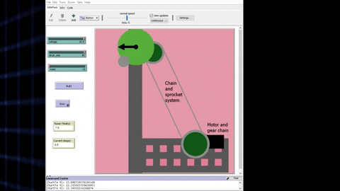
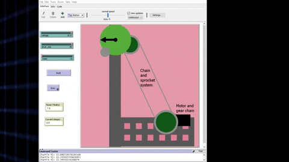

Mechanical Winch
October 14th 2019 - October 22nd 2019, Principles of Engineering
The goal of this project was to create a functioning winch with Vex or Fishertech parts that could lift at least 100 grams 30cm over the side of a table. A mixture of Vex parts and Fishertech parts were used to make our winch function. The winch consists of a mounted motor, that is mated with a gear. This gear shares an axle with a large sprocket, which is part of a chain and sprocket system. At the end of the chain and sprocket system, the actual drum of our machine shares an axle with the second sprocket in the chain and sprocket system. Along with the build of this winch, we were supposed to create a Netlogo simulation that simulated how our mechanical winch worked. This simulation had to be accurate, and it had to match with the physics of our winch in real life. My main tasks in this project were building the chain and sprocket system, working on the Final Design Solution in the documentation, and I was also asigned with the task of completing the functionality of the Netlogo simulation. In the Netlogo simulation, I made sure to make the winch work in the most logical sense possible, where a larger motor causes the linear speed of the winch to be greater so the object is lifted faster, or where a lower amount of voltage, causes the weight to be lifted much slower. These small detail of the Netlogo simulation saved the group many points in this project. Documentation Link
Netlogo Simulations
Changes: Mass of weight, size of drum, Voltage
.gif) 
